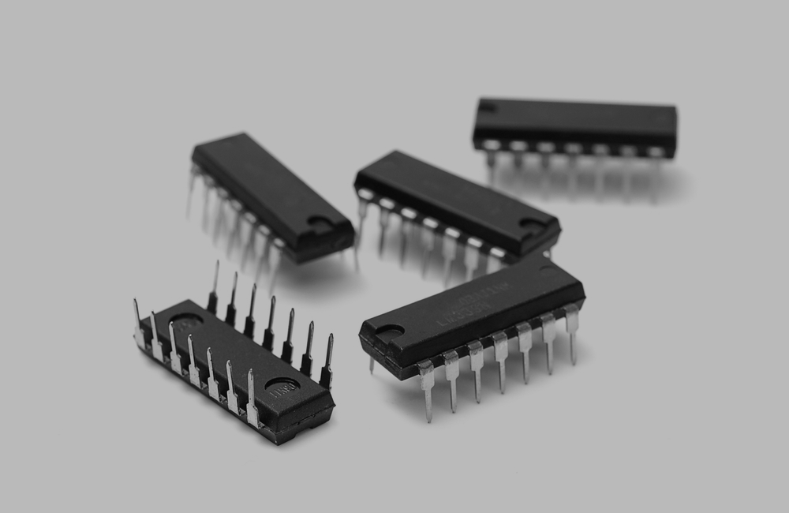
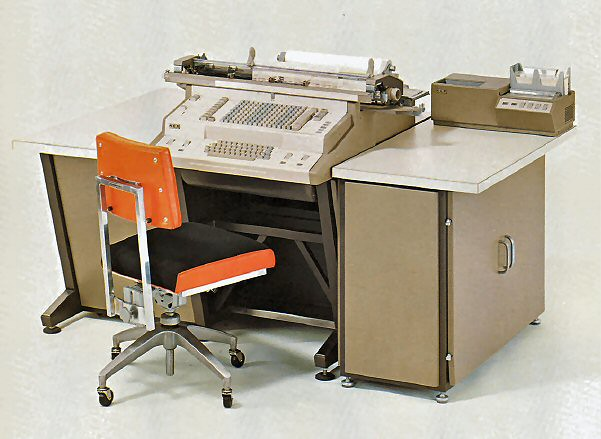
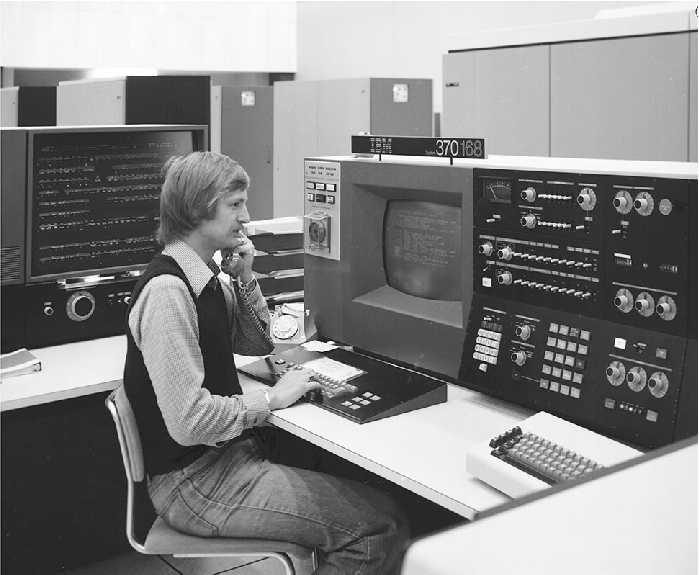

Calculatoarele din a treia generatie
1963-1971
In timpul celei de-a treia generatii tehnologia s-a schimbat de de la tranzistori la circuite integrate.
Un circuit integrat este un ansamblu elemente miniaturizate (tranzistori) construit pe o singura bucata de siliciu. Aceasta tehnologie a avansat viteza si fiabilitatea calculatoarelor.
In perioada acestei generatia au avansat si sistemele de operare, programe proiectate pentru controlul calculatoarelor. Datorita sistemelor de operare calculatoarele pot executa mai multe programe simultan.
Limbajele de programare au avansat si ele, fiind categorizate ca high-level, un exemplu de limbaj de programare high-level din aceasta generatie este BASIC (Beginners All-purpose Symbolic Instruction Code)
Exemple de calculatoare din aceasta generatie:
- NCR 395 
- IBM 370 
Principalele caracteristici ale acestei generatii:
| Caracteristica | Componenta |
|---|---|
| Principala componenta electronica | Circuite integrate |
| Limbajul de programre | Limbaje high-level |
| Memoria | Memorie cu ferite si discuri/benzi magnetice |
| Dispozitive I/O | Benzi magnetice, monitor, tastatura, imprimanta etc. |